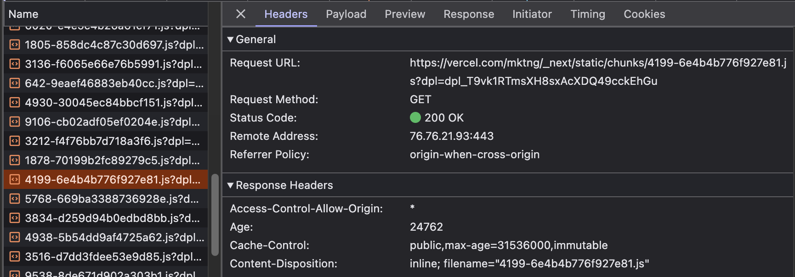
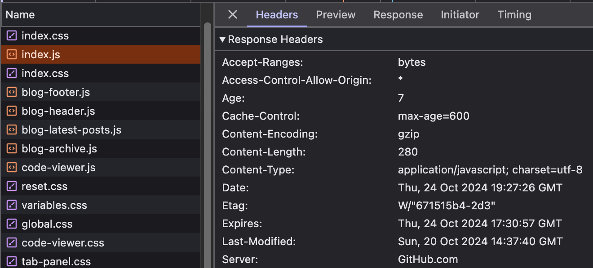

If you go to a typical website built with a framework, you'll see a lot of this:
Those long cryptic filenames are not meant to discourage casual snooping. They're meant to ensure the filename is changed every time a single byte in that file changes, because the site is using far-future expire headers, a technique where the browser is told to cache files indefinitely, until the end of time. On successive page loads those resources will then always be served from cache. The only drawback is having to change the filename each time the file's contents change, but a framework's build steps typically take care of that.
For vanilla web sites, this strategy doesn't work. By abandoning a build step there is no way to automatically generate filenames, and unless nothing makes you happier than renaming all files manually every time you deploy a new version, we have to look towards other strategies.
How caching works
Browser cache behavior is complicated, and a deep dive into the topic deserves its own article. However, very simply put, what you'll see is mostly these response headers:
- Cache-Control
-
The cache control response header determines whether the browser should cache the response, and how long it should serve the response from cache.
Cache-Control: public, max-age: 604800This will cache the resource and only check if there's a new version after one week.
- Age
-
The
max-agedirective does not measure age from the time that the response is received, but from the time that the response was originally served:Age: 10This response header indicates the response was served on the origin server 10 seconds ago.
- Etag
-
The
Etagheader is a unique hash of the resource's contents, an identifier for that version of the resource.ETag: "33a64df551425fcc55e4d42a148795d9f25f89d4"When the browser requests that resource again from the server, knowing the Etag it can pass an
If-None-Matchheader with the Etag's value. If the resource has not changed it will still have the same Etag value, and the server will respond with304 Not Modified.If-None-Match: "33a64df551425fcc55e4d42a148795d9f25f89d4" - Last-Modified
-
The
Last-Modifiedheader works similarly to Etag, except instead of sending a hash of the contents, it sends a timestamp of when the resource was last changed. Like Etag'sIf-None-Matchit is matched by theIf-Modified-Sinceheader when requesting the resource from the server again.
With that basic review of caching headers, let's look at some strategies for making good use of them in vanilla web projects.
Keeping it simple: GitHub Pages
The simplest strategy is what GitHub Pages does: cache files for 10 minutes.
Every file that's downloaded has Cache-Control: max-age headers that make it expire 10 minutes into the future.
After that if the file is loaded again it will be requested from the network.
The browser will add If-None-Match or If-Modified-Since headers
to allow the server to avoid sending the file if it hasn't been changed, saving bytes but not a roundtrip.
If you want to see it in action, just open the browser devtools and reload this page.
Visitors never get a page that is more than 10 minutes out of date, and as they navigate around the site they mostly get fast cache-served responses. However, on repeat visits they will get a slow first-load experience. Also, if the server updates in the middle of a page load then different resources may end up mismatched and belong to a different version of the site, causing unpredictable bugs. Well, for 10 minutes at least.
Extending cache durations
While the 10 minute cache policy is ok for HTML content and small JS and CSS files, it can be improved by increasing cache times on large resources like libraries and images. By using a caching proxy that allows setting rules on specific types or folders of files we can increase the cache duration. For sites proxied through Cloudflare, their cache customization settings can be used to set these resource-specific policies.
By setting longer cache durations on some resources, we can ensure they're served from local cache more often. However, what to do if the resource changes? In those cases we need to modify the fetched URL of the resource every place that it is referred to. For example, by appending a unique query parameter:
<img src="image.jpg?v=2" alt="My cached image" />
The awkward aspect of having to change the referred URL in every place that a changed file is used makes extending cache durations inconvenient for files that are changed often or are referred in many places.
Also, applying such policies to JavaScript or CSS becomes a minefield, because a mismatched combination of JS or CSS files could end up in the browser cache indefinitely, breaking the website for the user until URL's are changed or their browser cache is cleared. For that reason, I don't think it's prudent to do this for anything but files that never change or that have some kind of version marker in their URL.
Complete control with service workers
A static web site can take complete control over its cache behavior by using a service worker. The service worker intercepts every network request and then decides whether to serve it from a local cache or from the network. For example, here's a service worker that will cache all resources indefinitely, until its version is changed:
This recreates the far-future expiration strategy but does it client-side, inside the service worker.
Because only the version at the top of the sw.js file needs to be updated when the site's contents change,
this becomes practical to do without adding a build step. However, because the service worker intercepts network requests
to change their behavior there is a risk that bugs could lead to a broken site, so this strategy is only for the careful and well-versed.
(And no, the above service worker code hasn't been baked in production, so be careful when copying it to your own site.)
Wrapping up
Setting sane cache policies meant to optimize page load performance is one of the things typically in the domain of full-fat frameworks or application servers. But, abandoning build steps and server-side logic does not necessarily have to mean having poor caching performance. There are multiple strategies with varying amounts of cache control, and there is probably a suitable strategy for any plain vanilla site.
Last but not least, an even better way to speed up page loading is to keep the web page itself light. Using a plain vanilla approach to pages with zero dependencies baked into the page weight already puts you in pole position for good page load performance, before caching even enters the picture.